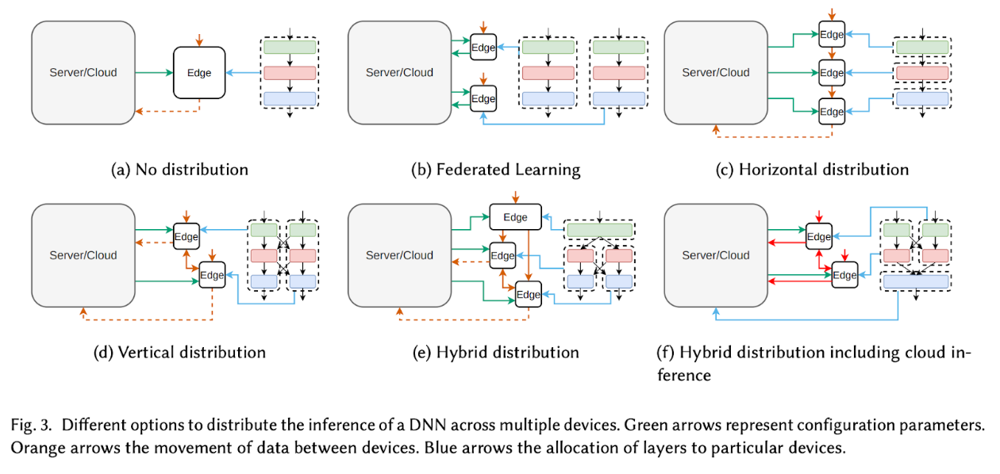
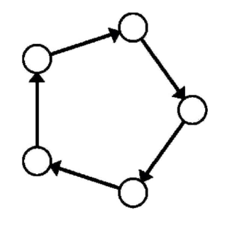
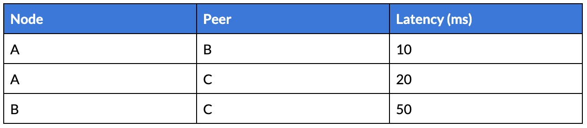

A Gentle Introduction to the DCIN for Decentralized Inference
How a Decentralized Collaborative Intelligence Network works.
February 9, 2025 · decentralized ai
Introduction
We’re on the brink of a new era in the AI and web3 fields.
Traditionally, AI inference has been the domain of centralized data centres and high-performance computing clusters, accessible only to a few. This is still the case for a lot of decentralized inference networks, where node operators must rely on high-end hardware to be able to earn rewards to effectively just mitigate their expenses.
This is not democratizing access to AI: most users aren’t able to actively participate in the inference phase due to GPUs’ high costs, and customers who want a decent level of decentralization or privacy are stuck with really slow or expensive solutions.
In the last couple of months, I have been working with my team on something that hopefully will set a landmark in the intersection of AI and web3: the DCI Network.
But before talking about that, let’s take a step back and see why we ended up in this situation in the first place.
Some background
Neural Networks are, as the name already suggests, networks of artificial neurons organized in layers. All the neurons in a layer perform the same operation on the given input data, they are often referred to as operators. Layers within a Neural Network are connected via weighted edges, adjusting these weights during training is what makes a Neural Network “learn”. These weights are often referred to as parameters.
Nowadays Neural Networks are constantly growing in complexity, and when their complexity grows, so do the computational requirements and memory footprint for running both inference and training.
Complex models have more layers, more neurons, and bigger architectures, which contribute to a huge number of mathematical operations that need to be computed. When a device performs these computations, it must store the result in memory.
A Neural Network is “large” when one (or more) of the following occur:
- It has a lot of operators -> requires more computational power
- It has a lot of parameters -> requires more memory to store the weights
I’m ignoring the training case (we should take into consideration also the training sample data size).
During the inference phase of a Deep Neural Network (DNN), input data is processed through every network layer to produce an output. Two critical factors affect this phase: the memory footprint (the amount of memory needed to hold the network and data) and the GOP (Giga [10⁹] Operations) required to generate the result. If a device lacks sufficient memory to accommodate the entire network, it cannot perform the inference. Even if memory is adequate, limited computing power can cause significant delays in processing, making inference impractically slow on less powerful devices.
The problem that we want to solve is: “How can we perform inference of a large model on a device that is limited by hardware?”. Or, in other words, how can we use a large model on a device that is not capable of handling the model operators and parameters?
Let’s picture the “abstract” concept of DNN as the concept of Graph, where data is represented by tensors and computed by operators. A tensor is a n-dimensional vector of data (or tensor) that flows through the graph (or NN); there are two types of tensors: input tensors (X) and output tensors (Y). An example of input tensors is the parameter tensors (that serve as static input for operators). When a tensor is the result of the output of an operator it’s called activation tensor.
Performing inference on a model means computing all the activations of the operators using an input tensor (our prompt in the LLM case) and obtaining the output tensor (our result — an image, text, etc.).
Current challenges and solutions
The current trend in the development of large language models (LLMs) focuses on scaling up, which means expanding model sizes and enhancing hardware capabilities. While this approach achieves state-of-the-art performance, it introduces significant challenges when deploying or interacting with such models:
- High costs and complexity — LLMs are really resource-intensive, requiring powerful hardware to be efficient or even to just work. This means that their deployment in local environments or devices is prohibitively expensive.
- Latency issues — our current world is based on time-sensitive applications, and transmitting data back and forth between cloud-based servers introduces significant latency, leading to suboptimal performances or even safety hazards in critical use cases.
- Privacy concerns — transmitting sensitive data over the internet to centralized servers poses high privacy risks. Once data leaves our device, we have no control over how it’s used or stored: sensitive data like healthcare or personal information could be intercepted or misused during transmission.
Several strategies are being exploited to mitigate these challenges, especially for reducing the computational requirements of LLMs. These techniques work by simplifying models without severely degrading their performance:
- Quantization reduces the precision of the model parameters, lowering the memory footprint. This method has its limits, as lowering precision too much can degrade model accuracy, and not all hardware supports operations with lower precision.
- Distillation involves training a smaller model (“student”) to replicate the performance of a larger model (“teacher”), thereby reducing the size of the model.
- Pruning removes unnecessary parameters from models, decreasing the computational load.
For more information regarding these solutions, you can check my previous article.
Efficient Deep Learning: Unleashing the Power of Model CompressionAccelerate model inference speed in productiontowardsdatascience.comtowardsdatascience.comThese methods can help but do not fully scale for large models, and you still have a performance trade-off for all of them. Instead of relying on a single device, let’s take into consideration distributing computing across multiple devices. By forming a network of devices, each contributing to the overall computation, larger models can be executed more efficiently. This also allows for:
- Scalability — adding more devices to the network increases the total memory and computing power available, making it possible to handle larger models without overwhelming individual devices.
- Fault Tolerance — a decentralized, heterogeneous network of devices reduces the risk of downtime. If one device fails, others can continue processing, ensuring the system remains operational.
- Privacy Preservation — in a distributed system, data is not sent to a single centralized server. Instead, information is shared and processed across the network, preserving privacy. Since no single server has access to all user data, the risk of sensitive information being misused is significantly reduced.
What is the DCI Network?
The Decentralized Collaborative Intelligence Network or DCI Network is a network of nodes that share computational power to execute inference on open source models.
By “collaborative intelligence” we mean a distributed system where multiple actors are contributing to solving a particular problem by autonomously computing a part of the solution of such a problem. In the context of the DCI network, the actors are the nodes, the problem is the inference of a model and the solution is the result of the inference.
Distributed Model Parallelism
The approach we want to use is to divide the neural network graph into subgraphs and assign each subgraph to a particular device. By executing inference on these subgraphs we drastically reduce the computational requirements on each device.
The process of dividing the graph into subgraphs is known as Layer Sharding. Layers and/or sublayers can be allocated to the DCI Network devices in different manners based on a variety of strategies.

Layer Sharding key concepts
- Model partitioning — the model is divided into segments (the subgraphs), each consisting of one or more layers. These segments will be distributed among the devices.
- Sequential execution — the inference proceeds sequentially through the various layers, and each intermediate result is passed from device to device.
When implementing Layer Sharding in a horizontal (sequential) splitting manner, within a network of devices with different computational powers, there are two main challenges that need to be addressed (more on that later):
- Layer Assignment — we need to find the best way to assign one or more layers to each device. For example, layers that need a higher memory consumption might be distributed to multiple devices that have less available memory.
- Effective Communication — the devices of the network need to communicate efficiently and in a fast way. Also, messages must not be lost during communication, otherwise the whole inference process collapses.
DCI Network Challenges
Developing such a network poses multiple challenges:
- Distribution Selection — How can an optimized configuration be chosen? This includes determining where to partition the network and allocate tasks across devices. The search space for possible configurations may be too large to test exhaustively, requiring algorithms to guide selection. The challenge is how to model this optimization problem.
- Devices — How many devices are available, and are they identical or do they differ in features? Is performance modelling (in terms of latency and energy) available, or is profiling required to inform decisions?
- Metrics and Constraints — What are the primary metrics (e.g., speed, energy) to optimize? If multiple metrics exist, are there priorities among them? Are there any hard constraints that need to be considered?
- Adaptability — Should the system adapt to dynamic changes (e.g., bandwidth fluctuations, changes in the number of devices) or should it be configured once at compile-time, remaining static afterwards?
In a static runtime system, the distribution algorithm is executed only once during the compilation phase of a DNN. After this, the network is partitioned and assigned to different devices, which are then used for actual operations. Since the distribution is determined at compile-time, more complex algorithms can be employed for optimal task allocation, as they are not constrained by real-time performance. This allows for thorough analysis and longer algorithmic execution without affecting the system’s runtime performance.
In an adaptive runtime system, the network topology changes dynamically to optimize some metrics. The most common variable that is monitored is usually the bandwidth between devices of the network. In this way, it is possible to change device allocations to optimize latency and load balancing.
Research related to distributed computation mainly focused on the optimization of three aspects of such networks which are:
- Latency — time required for the system to run the entire process from obtaining the input data to generating the output result;
- Throughput — number of inputs that the system can process per second;
- Energy — energy needed to communicate and process one input.
Most studies also focus on optimizing only one type of metric, and our primary goal is to optimize the latency metric. However, we believe that generating multi-objective optimization problems presents itself as a promising research and development direction.
We’ll see in the next paragraphs how we want to tackle these challenges.
Architecture
The DCI Network nodes solve two main purposes inside the network:
- Inference — to calculate the inference of the model.
- Validation — to validate the result of the other nodes for reward generation.
The DCI Network is a P2P network. The topology of the network is constructed via a graph; each node of the graph contains its ID and the description of the device itself (memory, chip, etc.). The discovery of peers happens through this graph.
A node, to become part of this network needs to hold the private key or seed phrase of a wallet that has staked a fixed amount of tokens.
Inference
In the DCI Network, any device can participate: whether it’s a Macbook Pro, a Linux Laptop or a mobile device (like an iOS phone). This is done via the already cited distributed model parallelism.
We already described before how we can consider a Neural Network as a graph and how the DCI Network is structured itself as a graph. To simplify the understanding of the following passages:
- With “model graph” we are addressing the graph structure of a Neural Network (or model);
- With “network graph” we are addressing the graph structure of the nodes connected to the DCI Network.
We also discussed how creating subgraphs of the initial model graph allows us to distribute them to multiple devices in order to solve the problem related to hardware requirements.
Our goal now is to find the best partitioning strategy in order to find the best way to assign the layers to each device.
By partitioning strategy, we mean an algorithm that optimally splits up the layers of the model and assigns them to a node of the network to be computed. We describe the Ring Memory-Weighted Partitioning Strategy (proposed by Exo Labs) and then we propose our more advanced solution.
In a ring-shaped network, each node will receive the input for its local model chunk from the previous node in the communication chain, and it will process it to transmit its output to the next node. Due to the autoregressive nature of LLMs, the output information will have to be fed back into the input to generate another token. This is why the proposed partition strategies are the most suitable for our use case.
Ring Memory-Weighted Partitioning Strategy
In this strategy, the network works by splitting up the workflow using weighted partitioning among all the nodes that participate in the network. Each device contributes to the inference based on the following formula:
n = device_memory / total_memorywhere n is the number of model partitions, device_memory is the device available memory for inference and total_memory is the total amount of memory of the network. The total memory of the network is calculated via the broadcast of the resources available from the other nodes.
In other words, each device contributes proportionally to how many resources it’s sharing with the network in relation to how big the network is, and it’s rewarded based on such proportion.
Using a Ring Memory-Weighted Partitioning Strategy (like the one depicted in the picture below proposed by Exo Labs in their exo implementation), the nodes are sorted by their total memory in ascending order, and based on their value n (calculated in the formula above) both a start layer and an end layer of the model are calculated. These will be the start and end layers of the model that that particular node will use for the inference.

Layer-Aware Ring Memory-Weighted Partitioning Strategy
We propose an evolution to the Ring Memory-Weighted partitioning strategy: we call it the Layer-Aware Ring Memory-Weighted Partitioning Strategy (or Layer-Aware RMW).
The Ring Memory-Weighted partitioning strategy is a static strategy: this means that the partitioning takes into consideration only the resources of the network, and gets updated only when a node joins/leaves the network.
Our solution, instead, is dynamic because it changes every time based on the model that gets requested: this is because the partitioning is not only done solely on the resources of the network, but we also calculate the computational needs of each model layer and optimally assigning the most computation-intensive layers to the best-performing devices in the network.
In order for this to work we need to perform:
- Device Profiling — when a device joins the network, it retrieves its CPU/GPU capabilities and memory capacity and shares it with the other nodes
- Model Profiling — the open-source models usable in the DCI Network have each of their layers profiled, so we know what resources are needed to optimize the computation on that given layer.
Given a set of layers (with their associated computational complexities and memory requirements) and a set of devices (our network) with their processing powers, we need to solve an optimization problem where the goal is to balance the computational load and memory usage across all devices.
Solving this problem means:
- Minimize any computational imbalance across devices
- Ensuring memory constraints are not violated during layer-to-device assignment
- Optimizing for minimal inter-device communication
Validation
Being the DCI Network is a decentralized network, we need to provide validation (or verification) to ensure that the nodes are actually performing inference on the right layers and returning the correct output to the next node/to the user.
We introduced then the concept of staking in order to let nodes enter the network.
Staking is a strategy used across crypto and web3 that empowers users to participate in keeping a blockchain network honest and secure.
Now we need to see how and why we should perform slashing on such stakeholders in case they act maliciously. When talking about verifiable inference, there are two types of approaches that we could take: proof-based and cryptoeconomics-based.
Proof-based validations
Proof-based validations, as the name suggests, are approaches that use proofs to verify that the inference was executed correctly. For the scope of the DCI Network, we will take into consideration just two types of proof-based validation: Zero-Knowledge Proofs and Optimistic Fraud Proofs. The following three paragraphs are an extract of the amazing work done in this paper.
Zero-Knowledge Proofs
zkML (Zero-Knowledge Machine Learning) represents a new paradigm in the intersection of ML and Blockchain: by leveraging zk-SNARKS (Zero-Knowledge Succinct Non-Interactive Arguments of Knowledge), it safeguards confidentiality in model parameters and user data both during the training and the inference processes. This can mitigate privacy concerns but also reduce the computational burden on the blockchain network.
What’s most fascinating about zkML it’s the fact that it is able to generate proofs of a fixed size, regardless of how big the model is. This cryptographic approach, also, always guarantees correctness.
On the other hand, the cost of compiling a DNN into a zero-knowledge circuit has been proven extremely difficult, and also extremely expensive: some studies have shown an increase of 1000x of the cost of inference and latency (due to the proof generation). Even if this cost may be divided along the nodes, or passed down to the user, it’s still very expensive.
Optimistic Fraud Proofs
opML (Optimistic Machine Learning) instead brings a new paradigm to the table: trust, but verify. This approach always assumes that the inference is correct, and after it has been generated validator nodes can call out a node for having generated a wrong inference using a fraud proof.
If a validator node generates a different inference, it can start a dispute that can be settled on-chain.
What is really strong about opML is the fact that as long as there’s a single honest validator in the network, there’s no incentive for the actual inference nodes to act maliciously, since they will lose the dispute and get slashed. It is also way less expensive than zkML, but the cost scales proportionally in relation to how many validator nodes are present. In the context of the DCI Network, the cost scales also with how many inference nodes are available, since all the validator nodes must re-run the inferences that have been computed. Another problem with opML concerns the finality: we should wait for the challenge period in order to accept an inference as correct or not.
zkML vs opML
These two approaches really differ from each other. Let’s see their main differences, pros and cons:
- Proof system — zkML uses zk-SNARKS to prove the correctness of the ML output, opML uses fraud proofs.
- Performance — we need to break down this metric into two sub-categories:
Proof generation time — generating a zkML proof takes long and complexity grows dramatically with increasing model parameters. Fraud proofs, instead, can be computed in a short time.
Memory consumption — just to give an example, the memory consumption of a zkML circuit for generating a proof for a 7B-LLaMa model is in the order of Terabytes, while the memory consumption for generating a proof for such model using opML is “equivalent” to the size of the model itself (so in this case this model is around 26 GB, the memory required is 32 GB).
- Security — zkML gives the best security possible, no doubt, but it also introduces problems related to costs and generation time. opML, on the other hand, sacrifices security (because it relies more on economics rather than cryptography or mathematics) for flexibility and performance.
- Finality — the finality of zkML is achieved when the zk-proof of the inference is generated; for opML, instead, the finality is achieved when the challenge process ends. Though we need to wait for this process to end, for larger models (but even for smaller ones) if the zkML time of generating the proof takes longer than the challenge process of opML, the latter can achieve finality faster than the first.
Cryptoeconomics-based validation
These approaches skip the complex cryptographic and mathematical details, focusing solely on achieving the desired outcome.
A really easy example of such an approach in the context of the DCI Network is to let the inference be executed by multiple nodes (N) at the same time, the results are checked between each other and the most amount of nodes with the same response are considered “correct” and get passed further in the ring; the odd ones are rejected and slashed.
With this approach, the latency depends on the number of nodes and on the complexity of the inference, but since the goal of the DCI Network is to reduce the network complexity, we can optimistically say that such an approach has a fast latency.
However, the security is at its weakest, since we cannot leverage cryptography or mathematics to ensure that the output is correct: if a reasonable number of nodes were to deviate (rationally or irrationally), they could impact the result of the inference.
What’s really interesting though is that this “security problem” is true for most of the “decentralized inference networks” out there that just perform redundant inference and use a commit-reveal scheme. In the DCI Network, instead, we can leverage different techniques to mitigate such security problems: the first one is leveraging EigenLayer restaking and attributable security to allow the network to provide “insurance” in case of a security failure.
The second one deserves its own paragraph.
Cryptoeconomics security in the DCI Network
Due to the nature of the DCI Network, inference is calculated step-by-step on a batch of layers instead of the whole model. As already mentioned in this document, users when asking for inference can pay more to increase the level of security and decentralization of the inference.
Why is that the case and how does this relate to the cryptoeconomics-based approach for validation? When a user wants to increase the security level, in reality, he’s paying more for allowing more subgraphs (thus more nodes) to execute inference on his prompt. This means that multiple nodes will execute inference on the same layers, and their result will be checked between one another by the validator nodes. This not only increases security but is also fast because what validators need to check is output tensor equality.
Let’s make an example to make this clearer.
The user selects a security level of 3, meaning 3 subgraphs will be chosen to execute inference. These subgraphs will have the same partitioning, meaning that the number of nodes (N) and the number of layers per node (M) will be the same. For this example let’s set:
X = 3
N = 5
M = 10This means that we’re gonna have 3 subgraphs with 5 nodes each that will compute 10 layers each. The number of nodes also defines the depth of our subgraph, meaning the number of “inference steps” that we need to perform in order to achieve the final output. We’re also going to define with the notation Ixy the y-th node of the x-th subgraph that is currently performing inference. This is going to be helpful when explaining how the inference and validation processes work together.
Step 1:
Nodes I11, I21, I31 are currently executing inference on their 10 layers using the input prompt. They all output the same result vector [a, b, c]; this output is sent to the next nodes of the inference ring and to the validator nodes.
Step 2:
Nodes I12, I22, I32 are executing inference on their 10 layers using the result vector of the first nodes. They all output the same result vector [d, e, f]; this output is sent to the next nodes of the inference ring and to the validator nodes.
Step N — 1:
Nodes I1N-1, I2N-1, I3N-1 are executing inference on their 10 layers using the result vector of the first nodes. The node I2N-1 returns a different result from the other two nodes.
Step N:
The final nodes of the ring perform the last bit of inference, but of course, due to the wrong result of node I2N-1, the subgraph 2 is producing a different (or “wrong”) inference.
The validators after receiving all the intermediate inference results (or during the process, still TBD) perform a vector equality check between all the different levels. They find out that node I2N-1 is the only one that has returned a different output from the other nodes of their level, so it gets slashed. The correct result (output of the subgraphs 1 and 3) gets sent to the user.
Why does this increase security? Because the probability of multiple nodes getting selected at the same level, for the same inference request and with the means of deviating is extremely low. This is because this type of model resembles the Swiss cheese model: having multiple subgraphs with different layers is like having multiple Swiss cheese slices on top of each other; in order to achieve the final result of returning a malicious or erroneous result to the user is like trying to pass through all the holes in the cheese slices at once until reaching the bottom.
Since this type of security model allows us to easily find the malicious nodes, combining this with the fact that nodes are getting penalized for acting “differently” from other nodes and with the fact that validator nodes are also subject to their own consensus algorithm with penalties, we can achieve a relevant level of security without sacrificing performance and without implementing complex cryptographic algorithms that would cost a lot in terms of money and time.
Latency (inter-device communication)
As previously mentioned, latency is a key metric. In order to achieve efficient inter-device communication and optimize the DCI Network, we want to focus on the following key strategies.
Network Proximity Awareness
When creating the subgraphs (rings), we need to ensure that nodes close to each other are physically (or logically) close in terms of network latency. This reduces communication delays between nodes as the inference results are passed along the ring.
This optimization can be achieved by using network distance metrics (such as latency or bandwidth) when forming the subgraphs. This is also known as network proximity awareness.
The first step in creating a network proximity-aware system is to measure the latency and the bandwidth between the nodes. There are two main approaches to doing so:
- Active Probing — we periodically measure round-trip times (RTT) and bandwidth between nodes using protocols like ICMP (ping) or custom heartbeat messages. This allows us to have an estimate of how “close” nodes are to each other in terms of communication speed
- Passive Monitoring — if nodes are already communicating with each other, we can measure the network conditions (such as latency and throughput) from the traffic they generate without introducing additional overhead
Once the data has been gathered, we proceed with the creation of a proximity table, where each node stores its estimated latency to other nodes. This table can (and must) be updated with new measurements.
This matrix contains the pairwise latency between all the node’s peers:

Simple Example (Image by Author)
This matrix is distributed among nodes without central coordination and each node can access it to choose neighbours with low latency for forming the ring topology. Constructing this matrix is crucial when implementing our ring formation algorithm based on one of the strategies proposed above.
In addition to considering latency, it’s important of course to account for bandwidth and computational resources: nodes with higher bandwidth and stronger computational resources can be prioritized for layers with heavier computation or large intermediate data transfers. This requires building a composite metric that combines both latency and bandwidth into the proximity matrix.
We need to set a bandwidth threshold (bandwidth thresholding) for selecting neighbours to ensure that nodes with insufficient bandwidth aren’t chosen for high-throughput inference tasks. This means creating a composite score that weights both latency and bandwidth for each node pair.
We calculate such a score with the following formula:
score_ij = α*latency_ij + β*(1/bandwidth_ij)Where α and β are the weights that balance the importance of latency versus bandwidth.
Building such a proximity matrix is a common task in large-scale systems with many nodes. Thankfully, there are multiple distributed approaches that can help us achieve this goal:
- Gossip protocols — nodes periodically share proximity data with their neighbours, gradually spreading information about the network conditions. Over time, each node builds up its own local view of the proximity matrix;
- DHT-based discovery — using DHT-based strategies like Chord or Kademlia can be used to discover neighbours based on proximity, selecting peers that are close in terms of both network proximity and ID space. Chord DHT also is already meant for ring-based structures, so it can be a useful fit for solving this problem.
Chord DHT and Bandwidth-Weighted Proximity
Chord arranges nodes into a logical ring based on their hashed identifiers (node IDs). Each node maintains a finger table with pointers to nodes at increasing distances in the ring, which allows efficient lookups with O(log N) complexity. A node also knows its immediate successor (the next node in the ring) and its predecessor (the previous node), ensuring that data can be routed through the ring efficiently.
The “default” implementation of Chord uses the ID distance to calculate successors and predecessors. We need to modify such routing logic to account for both proximity (latency and bandwidth-based) and ID distance.
- Augmenting the finger table with proximity information: Each node maintains this finger table that stores nodes at specific intervals in the ID space. Instead of purely using distance in the ID space, we augment the finger table with latency and bandwidth information for each finger (neighbouring node). We use previously stated strategies to constantly update the proximity data.
- Proximity-Based Finger Selection: During the routing process, Chord typically forwards messages to the node closest to the target in the ID space. In our case, we use the previously cited proximity score to prioritize nodes that are both close in terms of ID space and network proximity.
Chord is fault-tolerant and handles node joins departures, and failures by adjusting the finger tables and successors pointers. With proximity awareness:
- When a node joins, we measure its proximity to its neighbours and update the finger tables of existing nodes accordingly.
- When a node leaves or fails, its closest neighbour in terms of proximity should take over its responsibilities. This ensures that the ring remains optimized for low latency even as nodes churn.
To maximize performance, the DCI Network must be tested under different conditions (eg. low bandwidth, high latency, node failures, etc.) to ensure that this proximity-aware routing strategy consistently improves performance. In addition to this, we must also experiment with different values of α and β to optimize for either low-latency or high-bandwidth, depending on the nature of the current AI model inference task.
Selective participation
Selective Participation is a strategy where nodes in a distributed network self-select or are assigned specific types of inference tasks based on their computational resources, particularly in terms of Teraflops (TFLOPS).
A Teraflop refers to a processor’s capability to calculate one trillion floating-point operations per second. This means that when a device has “8 TFLOPS”, we actually mean that its processor setup can handle 8 trillion floating-point operations per second on average. Unlike gigahertz (GHz) — that measures a processor’s clock speed, a TFLOP is a direct mathematical measurement of a computer’s performance.
Nodes can be categorized into different tiers based on their computational capacity; each category corresponds to the complexity and size of the AI models that nodes are capable of processing. An example of such categorization (TBD) could be:
- Category A (high-performance nodes): Range: 20+ TFLO. Suitable for large, resource-intensive model layers. Typical hardware: high-end GPUs, specialized AI hardware
- Category B (moderate-performance nodes): Range: 5–20 TFLOPS. Suitable for medium-complexity models. Typical hardware: mid-range GPUs, CPUs with AI accelerators (Apple Chips)
- Category C (low-performance nodes): Range: <5 TFLOPS. Suitable for lightweight models. Typical hardware: standard CPUs, mobile devices or edge devices with limited compute capacity
By categorizing nodes in such a way, the network ensures that nodes with sufficient computational resources handle the more demanding AI models, while less powerful nodes focus on lightweight models. This also creates an opportunity for people participating in the network using a mobile device (like their smartphone) by allowing these less-performing devices to participate in the inference of smaller models.
Final considerations
By utilizing a truly decentralized inference network, we enable AI tasks to be executed across a network of nodes, where computation is distributed dynamically and efficiently, while also maintaining a high level of security and rewarding users for sharing their computation.
In fact, our approach:
- Reduces latency and enhances scalability, by leveraging the collective “intelligence” (computational power) of the network. Inference tasks can be completed faster and more efficiently, without bottlenecks that may occur in centralized systems or old-fashioned distributed inference networks;
- Democratizes access to AI technology. Anyone with computing resources, from high-end GPU to edge devices, can contribute to the inference, making cutting-edge AI technology accessible to a broader audience;
- Optimizes resource utilization via our selective participation strategy and node selection process.
This new decentralized network will not only advance AI technology but will also empower individuals and organizations to participate in, benefit from and contribute to the AI ecosystem like never before.
Our network also has profound implications for the web3 ecosystem. By merging AI with the principles of the Blockchain, more in particular via incentivization, we create a self-sustaining system that rewards users for contributing computational power.
Our network not only compensates users but also indirectly creates a marketplace where computational power is commoditized. Not high-end, expensive, computational power, but the everyday one, mostly unused and “wasted”.
The concept of exploiting wasted computing power is as old as the internet. One of the earliest examples, the Condor project (now HTCondor), started in 1988. In 1993 Scott Fields wrote a research sampler called “Hunting for wasted computing power”, with the goal of putting idle pc’s to work.
In such a research sampler there’s a phrase that we would like to cite: “The philosophy here is that we would like to encourage you to use as many cycles as possible and to do research projects that can run for weeks or months. But we want to protect owners, whether or not they are heavy users”.
We can break down this quote into its parts:
- “We would like to encourage you to use as many cycles as possible” — this means that the program aims at maximizing the use of computational resources (CPU cycles at the time) that would otherwise go unused. The goal is to encourage users to run long and complex tasks, taking full advantage of their computing power;
- “and to do research projects that can run for weeks or months” — Condor supported research tasks that may require a lot of computational power over extended periods;
- “but we want to protect owners, whether or not they are heavy users” — this highlights the importance of protecting the user usage, respecting their usage preferences and letting the owners have full control.
In the context of our network, this phrase can be written as: “Our philosophy is to encourage the full utilization of available computational resources, empowering users to contribute to AI inference tasks. However, we remain committed to protecting the interests of resource owners, ensuring that they are fairly compensated for their participation”.
Authors
This article is an extract of a longer paper that will be published in the next months; this was written by Brian team.
Marcello Politi, Paolo Rollo, Francesco Cirulli, Matteo D’andreta, Federico Giancotti
Resources
Our work comes from studying different projects, papers and protocols of amazing AI and web3 researchers and developers, from whom we took inspiration. We would like to thank these authors, and the people working behind this project.
- Nagel, Markus, Marios Fournarakis, Rana Ali Amjad, Yelysei Bondarenko, Mart Van Baalen, and Tijmen Blankevoort. “A white paper on neural network quantization.” arXiv preprint arXiv:2106.08295 (2021).
- Xu, Xiaohan, Ming Li, Chongyang Tao, Tao Shen, Reynold Cheng, Jinyang Li, Can Xu, Dacheng Tao, and Tianyi Zhou. “A survey on knowledge distillation of large language models.” arXiv preprint arXiv:2402.13116 (2024).
- Cheng, Hongrong, Miao Zhang, and Javen Qinfeng Shi. “A survey on deep neural network pruning: Taxonomy, comparison, analysis, and recommendations.” IEEE Transactions on Pattern Analysis and Machine Intelligence (2024).
- Conway, So, Yu and Wongi. “opML: Optimistic Machine Learning on Blockchain” arXiv preprint arXiv:2401.17555v1 (2024).
- Ganescu, Bianca-Mihaela, and Jonathan Passerat-Palmbach. “Trust the process: Zero-knowledge machine learning to enhance trust in generative ai interactions.” arXiv preprint arXiv:2402.06414 (2024).
- Stoica, Morris, Liben-Nowell, Karger, Kaashoek, Dabek and Balakrishman. “Chord: A Scalable Peer-to-peer Lookup Protocol for Internet Applications”.
- The team behind Exo Labs, that kickstarted our work and for their contribution to democratizing access to AI, truly.
This article has been published on Towards Data Science